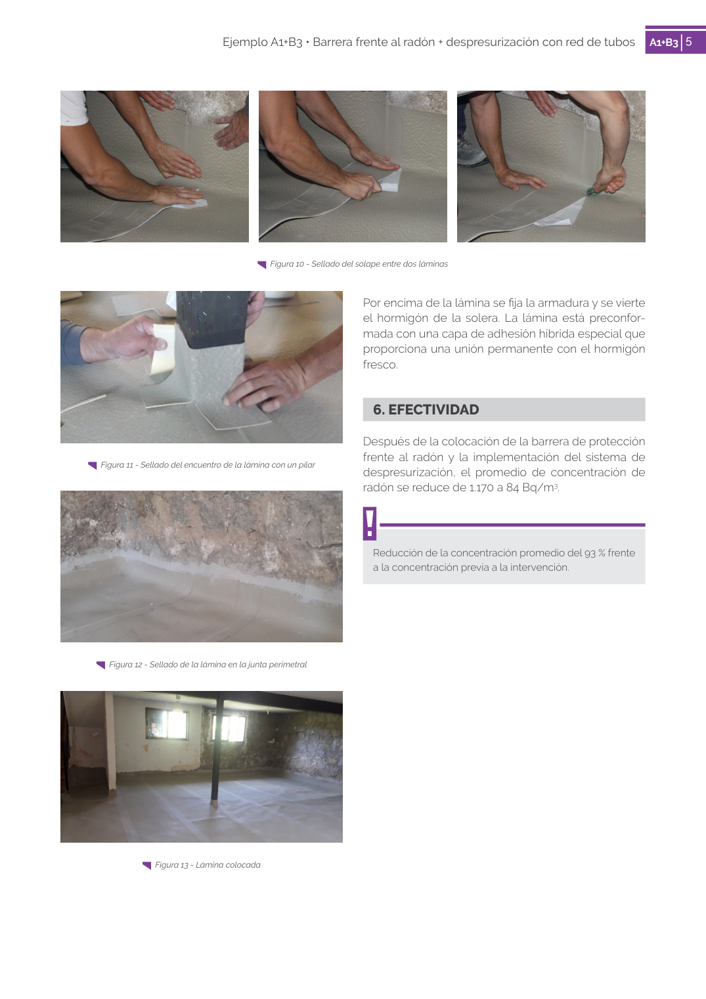

GUIA · Página 5 · versión 2019
SHA256: b82cfb6da5942cde8faab2ee62add20f04f53a5a420ef129ee29213b841c415a · página física 5 de 6 · métodos de encabezado
solo si están cotejados.
Formatos: Markdown · JSON de bloques · PDF p. 5 · imagen PNG
5 Ejemplo A1+B3 • Barrera frente al radón + despresurización con red de tubos A1+B3 5 Por encima de la lámina se fija la armadura y se vierte el hormigón de la solera. La lámina está preconfor mada con una capa de adhesión híbrida especial que proporciona una unión permanente con el hormigón fresco. 6. EFECTIVIDAD Después de la colocación de la barrera de protección frente al radón y la implementación del sistema de despresurización, el promedio de concentración de radón se reduce de 1.170 a 84 Bq/m3. Reducción de la concentración promedio del 93 % frente a la concentración previa a la intervención. Figura 11 - Sellado del encuentro de la lámina con un pilar Figura 12 - Sellado de la lámina en la junta perimetral Figura 13 - Lámina colocada Figura 10 - Sellado del solape entre dos láminas
